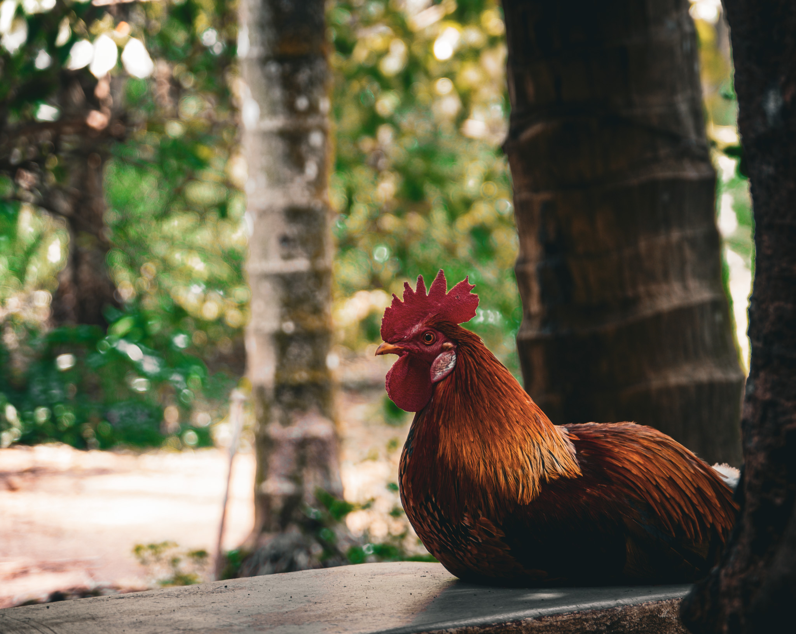
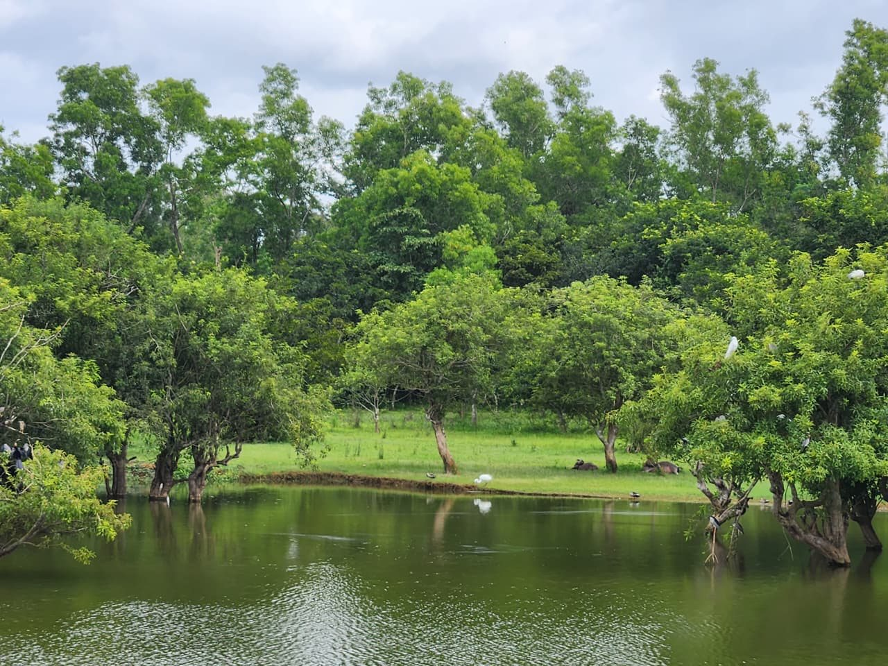
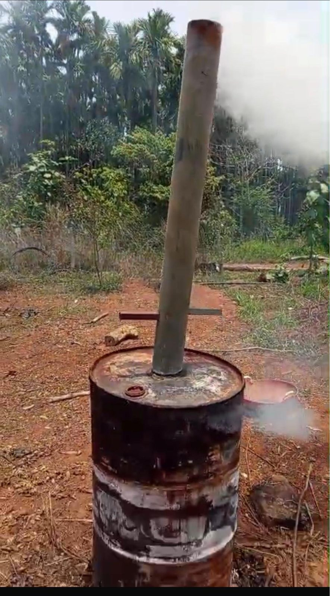
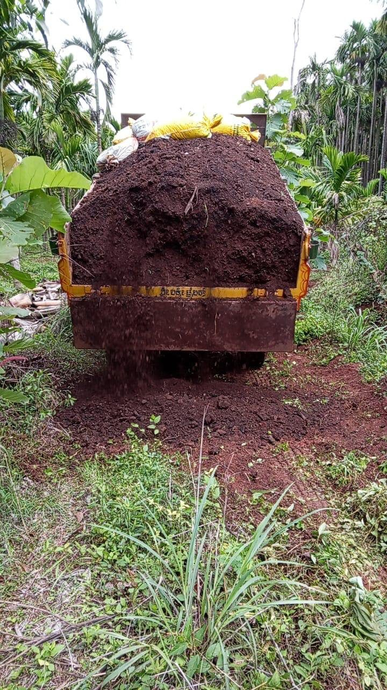
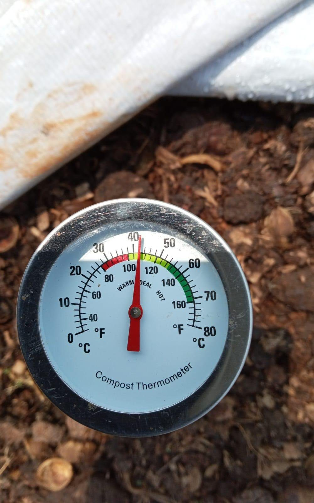

No stock-photo "smart farming." Every system below is a real instrument on real ground — and most of it is streaming live right now.
Hyperlocal weather — our real spray-window and irrigation input.
Moisture and conditions across plots, long-range and low-power.
Biodiversity tracked by ear — 20+ species and counting.
Moisture, pH, and weather stream from the field nodes into one feed. Each value updates when the Pi pushes a reading; sample numbers show until the live feed connects.
connecting…

A motion-triggered wildlife camera is going in along the forest edge. The latest frame posts here automatically — but only when there's no person in it.
Farm waste doesn't leave — it becomes fertility and carbon, made here in the open.



Tarped, batch-tracked, temperature-probed — the same loop that feeds the soil sensors a baseline.
The sensing layer feeds a working pipeline — not a dashboard for its own sake, but alerts and answers the people on the ground actually use.
Four-layer plant-health sensing, phased honestly.